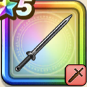

キーファの剣
攻略班 6.5点 / かえん斬りきのみをたべるたねをたべる閃烈回転斬り
くわしい特徴
【レベル別習得スキル】 Lv1攻撃力+5 Lv10かえん斬り（消費MP：3）敵1体に威力130%のメラ属性斬撃ダメージを与える Lv15きのみをたべる（消費MP：15）自分のHPを180ほど回復させる Lv20たねをたべる（消費MP：12）攻撃力か守備力のいずれかを1段階上げる Lv30閃烈回転斬り（消費MP：26）敵全体に160％のギラ属性斬撃ダメージを与える Lv35ドラゴン系へのダメージ+3% Lv40さいだいMP+5 Lv45攻撃時+2%の確率で猛毒を与える Lv50攻撃力+5 【限界突破スキル】 1凸閃烈回転斬りのダメージ+5% 2凸閃烈回転斬りのダメージ+5% 3凸閃烈回転斬りのダメージ+10% 4凸閃烈回転斬りのダメージ+20%